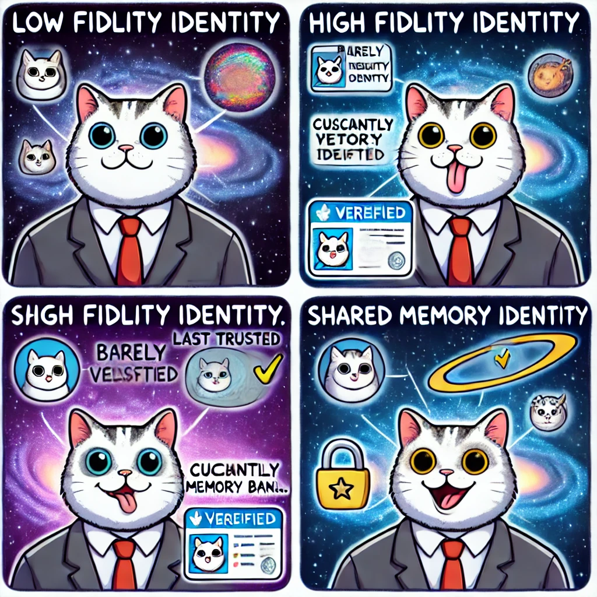

✨ Welcome to Fidelity! ✨
Join our amazing platform where your financial future is our priority! 💰
🚀 Click here to create your account! 🚀
Get started by filling out your details and enjoy exclusive benefits! 🎉
🌟 Important: Verify your identity to unlock all features! 🌟

📲 Scan the QR code above With Authenticator Api Like FreeOTP to create your account now! 📲
What is fidelity
fidelity
noun | fə-ˈde-lə-tē, fī-
plural: fidelities
1a. The quality or state of being faithful.
Example: his fidelity to his wife.
1b. Accuracy in details; exactness.
Example: The movie's director insisted on total fidelity to the book.
2. The degree to which an electronic device (such as a record player, radio, or television) accurately reproduces its effect (such as sound or picture).
